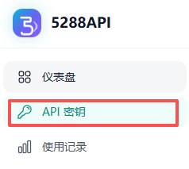
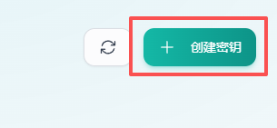
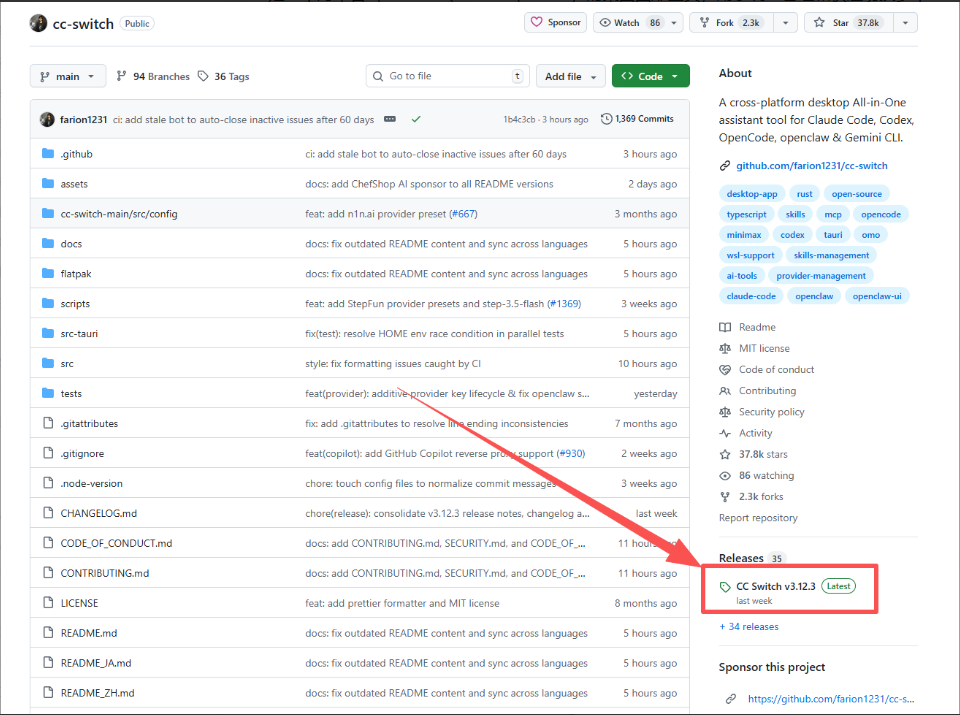
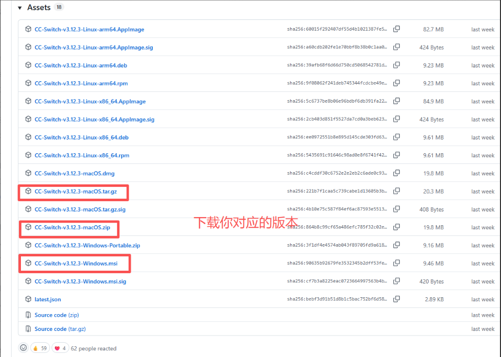
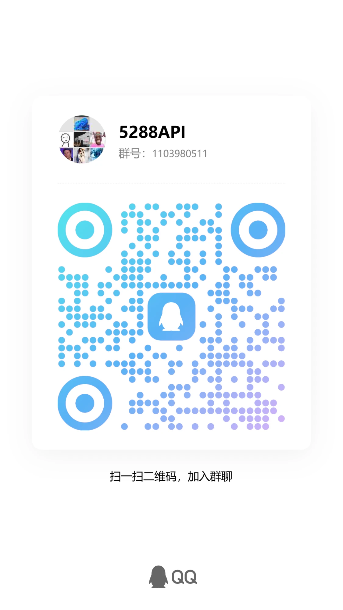

5288API（GPT / Claude / Gemini）使用与接入教程
从注册账号、创建密钥到在 Codex、Claude Code 中接入 5288API 中转站，按顺序操作即可。
一、注册登录账户
账号用于登录后台、查询余额和创建密钥。
1打开 5288API 官网
官网地址：https://api.the5288.com/。进入官网后，点击“注册”。
2注册一个账户
根据页面提示填写账号和密码。
二、添加 API 密钥
密钥是工具调用中转站的凭证，每个工具填一次即可。
1创建 API 密钥
- 登录后台，在左侧菜单进入“API 密钥”页面。
- 点击右上角“创建密钥”（部分版本叫“创建令牌”）。
- 名称可以随便填写，例如
Codex。 - 创建成功后复制密钥。


sk- 开头。不要发给别人，不要截图发群里，泄露后可能会被别人消耗余额。25288API 接口地址
通用 API 地址：
https://api.the5288.com/Codex 这类使用 OpenAI 兼容接口的工具，需要在接口地址后面加 /v1：
https://api.the5288.com/v1三、安装 VS Code
Codex、Claude Code 等命令行工具通常在 VS Code 的终端里使用。
1下载安装
官方下载地址：https://code.visualstudio.com/，下载后安装即可。
2中文插件
打开 VS Code 后，在插件市场搜索 Chinese，安装中文语言包，然后重启 VS Code。
四、配置 Codex
两种方式任选其一：新手推荐用 CC Switch，熟悉配置文件的可以手动编辑。
A使用 CC Switch 快速配置（新手推荐）
CC Switch 是一款支持 Windows、macOS、Linux 的跨平台桌面工具，可用于统一管理多个 AI CLI 工具的 API 配置，并支持快速切换不同服务。它适用于 Claude Code、OpenAI Codex、Gemini、OpenCode、OpenClaw 等工具。
详细使用说明可参考官方指南：cc-switch 中文 README。
第 1 步：下载 CC Switch
打开 CC Switch 的 GitHub 页面：https://github.com/farion1231/cc-switch。在右侧 Releases 区域点击最新版本。

进入版本页后，在 Assets 列表里根据自己的系统选择对应安装包：
| 系统 | 下载文件 |
|---|---|
| Windows | CC-Switch-vX.Y.Z-Windows.msi（或 Windows-Portable.zip 免安装版） |
| macOS | CC-Switch-vX.Y.Z-macOS.dmg、.zip 或 .tar.gz |
| Linux | 按架构选 x86_64 / arm64 的 AppImage、deb 或 rpm |

第 2 步：添加 Codex 配置
打开 CC Switch 后，先在顶部工具栏选择 Codex 图标（①），然后点击右上角橙色的 + 按钮（②）添加配置：

- 点击“自定义配置”。
- 供应商名称随便填，例如
5288API。备注和官网链接可以留空。 - API Key 填入刚才在 5288API 网页上复制的密钥。
- API 请求地址填写（填写兼容 OpenAI Response 格式的服务端点地址）：
https://api.the5288.com/v1 - 模型名称填当前可用的最新模型，例如
gpt-5.5。也可以点“获取模型列表”查看后台支持的模型。 - 点击右下角“添加”按钮保存配置。

添加完成后点击“启动”，即可完成 Codex 配置。启动后重启 Codex 使配置生效。
第 3 步：不通时改用 key 登录 Codex
如果仍然不通，可以直接在 Codex 里用密钥登录：
- 打开 Codex，在“开始使用 Codex”界面点击“使用其他方式登录”（不要点“使用 ChatGPT 登录”）。
- 在“OpenAI API 密钥”输入框里粘贴你创建的 5288API 密钥，点击“继续”。
- 新建对话发一句“你好”，能正常回复就说明可以使用了。


B手动编辑 Codex 配置文件
1. 打开配置文件
| 系统 | 路径 |
|---|---|
| Windows | C:\Users\你的用户名\.codex\config.toml |
| Mac / Linux | ~/.codex/config.toml |
2. 填写 5288API 配置
把你的 API Key 和接口地址填入 Codex 支持的 OpenAI Compatible 配置里，核心信息只有三项：
| 项目 | 填写内容 |
|---|---|
| API Key | 你的 5288API 密钥 |
| Base URL | https://api.the5288.com/v1 |
| Model | 后台模型列表中支持的模型名称，例如 gpt-5.5 |
3. 测试是否成功
配置完成后打开 Codex，输入一句测试：
你好，帮我写一个简单的 Python hello world如果能正常回复，说明配置成功。
五、配置 Claude Code
如果你的 5288API 后台支持 Claude / Anthropic 兼容接口，再配置 Claude Code。
同样可以在 CC Switch 中切换到 Claude Code 工具端，用“自定义配置”添加。常见填写内容：
| 项目 | 填写内容 |
|---|---|
| API Key | 你的 5288API 密钥 |
| Base URL | 5288API 后台提供的 Claude 兼容地址 |
| Model | 后台支持的 Claude 模型名称 |
六、常见问题
遇到问题先按下面排查，解决不了再联系售后。
密钥无效怎么办？
检查 API Key 是否复制完整，前后不要有空格。
如果还是不行，删除旧密钥，重新创建一个新的 API Key。
余额兑换成功但不能用怎么办？
先检查是否选错分组或模型。
再检查接口地址是否加了 /v1，正确格式一般是：
https://api.the5288.com/v1提示模型不存在怎么办？
去 5288API 后台查看模型列表，复制完整模型名称。不要自己手打简称。
请求超时怎么办？
可能是模型繁忙、网络不稳定、余额不足或软件配置错误。建议先换一个模型测试，再查看后台调用日志。
如果是在生成图片时超时，通常是你当前使用的账号或分组没有开通“图片生成”权限。如果并没有特意使用生图功能，可以退出 Codex 账号，改用 key 登录，然后重启 Codex 再试。
API Key 能不能发给别人？
不能。API Key 相当于你的账户调用密码，别人拿到后可以直接消耗你的余额。
如果怀疑泄露，马上删除旧密钥并重新创建。
售后与群聊
会员 AI 学习教程与售后支持。
- 售后 QQ：
1023259101 - 售后群：5288API，群号
1103980511
